알고리즘 세팅이란?
유튜브에게 "나는 이런 채널입니다"라고 알려주기 위한 작업입니다.
처음 채널을 개설하면 유튜브는 어떤 사람이 내 채널의 영상을 좋아하는지 알 수 없습니다. 그래서 초반에는 무작위로 노출이 됩니다. 알고리즘 세팅을 해두면 유튜브가 내 영상을 좋아할 만한 사람에게 노출시켜줄 확률이 높아집니다.
VidIQ 설치하기
VidIQ는 유튜브 모든 채널의 분석을 볼 수 있는 구글 크롬 확장 프로그램입니다. 무료로 사용할 수 있으며, 벤치마킹할 채널의 영상이 얼마나 떡상했는지, 사용한 썸네일, 태그, 해시태그가 무엇인지 확인할 수 있습니다. 한 번만 설치해두면 됩니다.
-
1
구글 크롬에서 VidIQ를 검색하거나 아래 버튼을 클릭합니다.
VidIQ 바로가기 → -
2
구글 아이디로 로그인합니다.
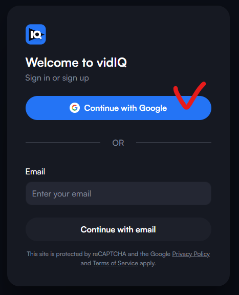
구글 아이디로 로그인 -
3
화면 왼쪽 메뉴바 하단에 "Install Extension"을 클릭합니다.
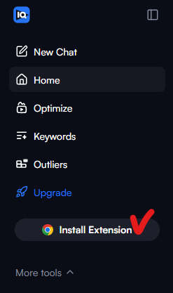
왼쪽 메뉴바 하단 → Install Extension 클릭 -
4
"Chrome에 추가"를 클릭합니다.
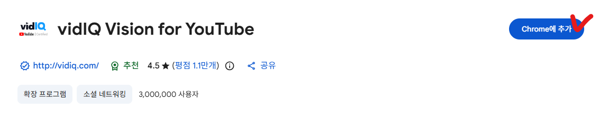
Chrome에 추가 클릭요금 결제 창이 뜨면 그냥 닫아도 됩니다. 무료 버전으로만 사용할 것이기 때문입니다. -
5
구글 크롬 오른쪽 상단의 퍼즐 모양을 클릭하면 VidIQ 확장 프로그램이 추가된 것을 확인할 수 있습니다.
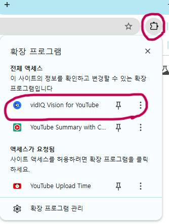
퍼즐 모양 클릭 → VidIQ 추가 확인 -
6
유튜브 홈 화면에 들어오면 VidIQ가 정상적으로 작동하는 것을 확인할 수 있습니다.
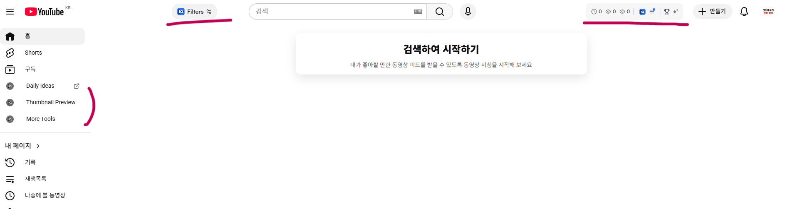
유튜브 홈 화면에서 VidIQ 작동 확인유튜브 기초부터 따라오신 분들이라면 위 이미지처럼 유튜브 홈에 아무것도 뜨지 않는 것이 정상입니다.
채널 구독하기
이제 내가 올릴 주제와 비슷한 AI 채널들을 30~50개 구독해서 유튜브 홈 화면을 채울 것입니다.
예를 들어 건강 채널을 주제로 정했다면 AI로 건강 콘텐츠를 만드는 채널들을, 경제 채널이라면 AI로 경제 콘텐츠를 만드는 채널들을 30~50개 구독해 놓습니다.
구독하는 이유: 현재 어떤 영상의 조회수가 급증하고 있는지, 어떤 키워드가 인기 있는지를 한눈에 파악하기 위해서입니다.
예시: 건강 채널에서 "꿀에 '이것' 넣었더니 뼈 나이 10년 젊어졌어요"라는 영상의 조회수가 급증했다면, "꿀"과 "뼈"에 대한 시청자들의 관심이 높다는 것을 알 수 있습니다.
앞으로 이 계정으로는 절대 다른 주제의 영상을 검색하거나 시청하지 않는 것을 추천드립니다. 건강 채널을 주제로 잡았는데 게임, 골프, 브이로그 등 다른 주제를 검색하거나 시청하면 유튜브 알고리즘이 꼬여버립니다. 유튜브 시청이나 검색은 기존에 사용하던 다른 계정을 이용하시기 바랍니다.
채널 찾는 방법
본인이 정한 주제를 유튜브 검색창에 검색합니다.
- 건강 채널 → "시니어 건강"
- 경제 채널 → "경제학"
- 심리 채널 → "심리학"
검색 후 오른쪽 상단 필터 → 업로드 날짜 → "이번 달"로 설정합니다.
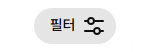
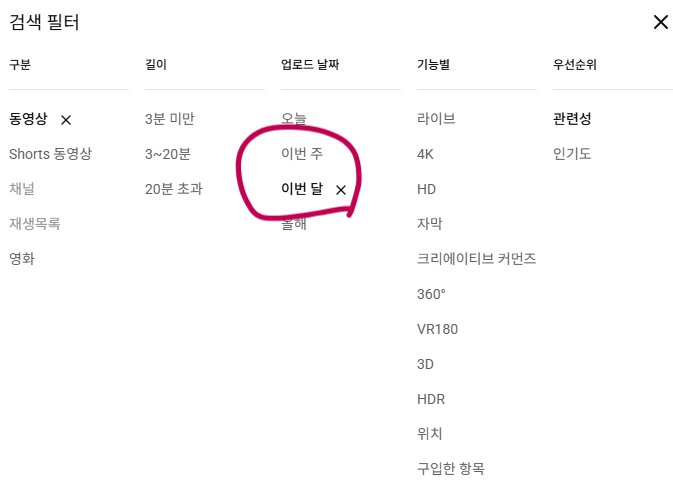
VidIQ가 설치되어 있다면 영상 제목 하단에 아래 정보가 표시됩니다.
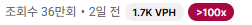
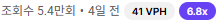
조회수 / 업로드 날짜 / VPH(시간당 조회수) / 평균 대비 떡상 지수 — 숫자가 클수록 유튜브에서 밀어주고 있는 영상입니다.
떡상하고 있는 AI 영상을 클릭해서 해당 채널 구독을 눌러놓습니다. 스크롤을 내리다 보면 오른쪽에 추천 영상들이 뜨는데, 하나하나 확인하면서 비슷한 AI 채널을 최소 30~50개 구독해 놓습니다.
-
구독자 3만 명 이하 채널 위주로 구독하기
구독자가 많은 채널은 이미 팬덤이 있어서 조회수가 높은 것이 당연합니다. 신규 채널 입장에서 벤치마킹하기에는 비효율적입니다. -
채널 가입일 확인하기
채널 홈 화면에서 "더보기"를 클릭하면 가입일이 나옵니다. 가입한 지 1~3개월 이내, 영상 수도 많지 않은데 떡상 영상이 많은 채널이 있다면 따로 메모해두세요. 이 채널 하나만 제대로 파서 벤치마킹한다는 생각으로 접근하면 충분히 빠르게 성장할 수 있습니다.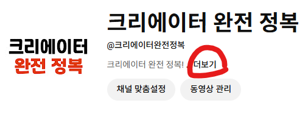
채널 홈 → 더보기 → 가입일 확인 -
AI 건강 채널 구분하기
건강 채널은 대부분 실제 사람처럼 보이는 AI 아바타가 립싱크를 통해 말하는 형식입니다. 썸네일로도 구분할 수 있는데, AI 건강 채널의 썸네일은 대부분 아래와 같은 패턴입니다. 썸네일 문구 4~5줄과 사람 이미지가 함께 있는 형태입니다.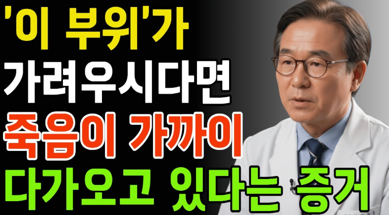
AI 건강 채널 썸네일 패턴
30~50개의 채널 구독을 완료했다면 오늘의 목표는 달성입니다. 유튜브 홈 화면에서 새로고침을 하거나, 하루 정도 시간이 지난 후 유튜브 홈 화면을 확인하면 내가 벤치마킹할 영상들로 가득 채워진 것을 볼 수 있습니다.
유튜브 스튜디오 키워드 + 카테고리 설정
주제도 정했고, 알고리즘 세팅도 해놨습니다. 이제 마지막으로 내 채널의 카테고리와 키워드를 설정해서 유튜브에게 "내 채널은 이런 채널입니다"라고 알려줄 차례입니다.
카테고리 설정
유튜브 스튜디오 → 왼쪽 하단 설정 → 업로드 기본 설정 → 고급 설정 → 카테고리를 내 주제에 맞게 변경 후 저장합니다.
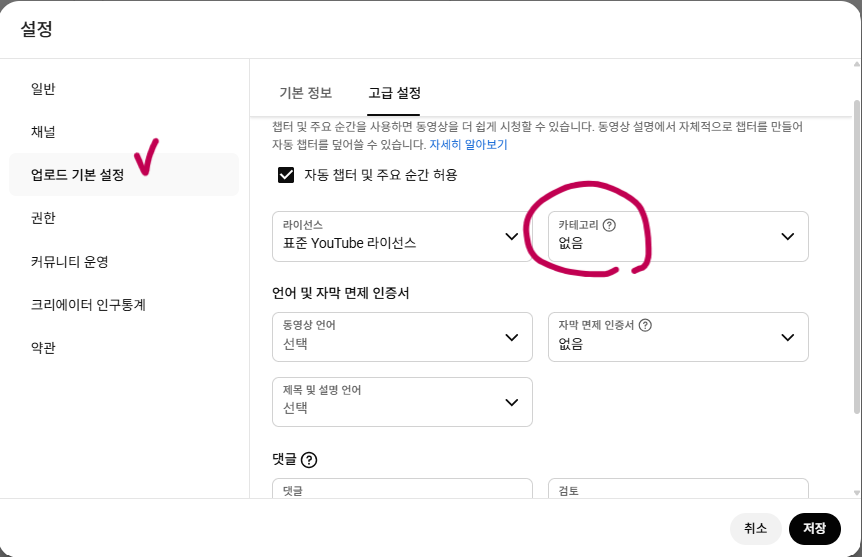
키워드 설정
-
1
구독해 놓은 30~50개 채널 중 가장 벤치마킹하고 싶은 채널 하나를 선택합니다. 이 채널 하나만 제대로 파서 벤치마킹한다는 생각으로 선택하는 것이 중요합니다. (최근 떡상 영상이 많고 개설한 지 얼마 안 된 채널)
-
2
그 채널의 아무 영상이나 클릭하면 오른쪽에 VidIQ 분석 창이 뜹니다.
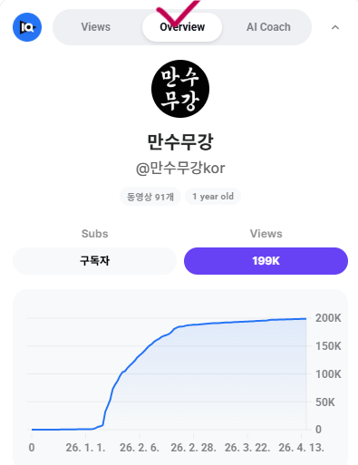
영상 클릭 → 오른쪽 VidIQ 분석 창 -
3
Overview를 클릭한 후 스크롤을 내리면 Channel Tags와 Video Tags가 보입니다.
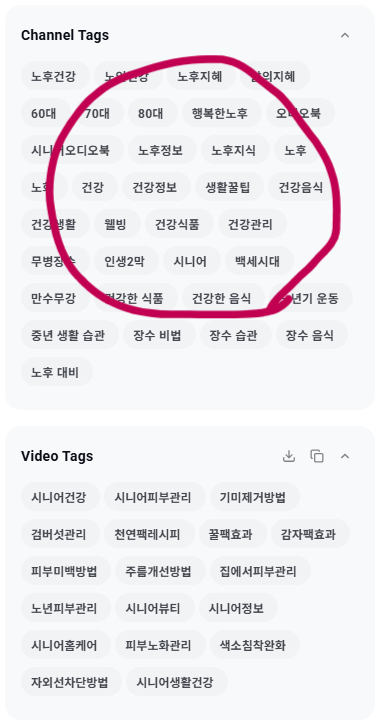
Overview → Channel Tags / Video Tags- Channel Tags — 이 채널의 키워드
- Video Tags — 이 영상의 태그
-
4
Channel Tags를 드래그해서 전체 복사합니다. 메모장에 붙여넣기 해두는 것을 추천합니다.
-
5
유튜브 스튜디오 → 왼쪽 하단 설정 → 채널 → 기본 정보 → 키워드란에 복사한 키워드를 하나씩 입력한 후 저장을 눌러줍니다.
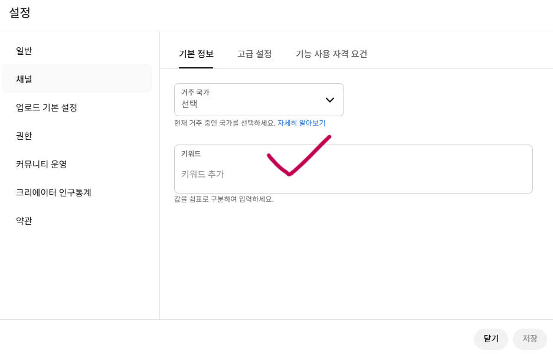
설정 → 채널 → 기본 정보 → 키워드 입력 후 저장